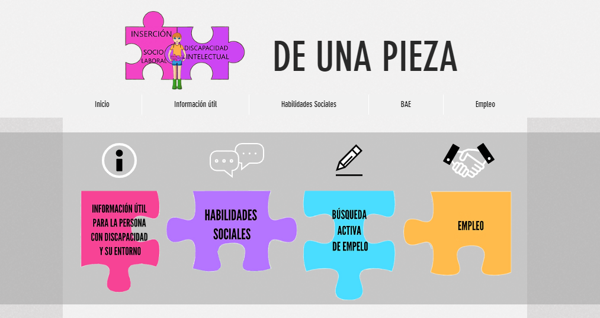

Soy una persona creativa y detallista. Trato de hacer las cosas lo mejor posible, dando lo máximo de mí.
En esta página web trato de demostrar mis capacidades en el Front end volcando mis ideas, creatividad y gustos de la forma más óptima y particular posible, siempre dándole un toque de personalidad, pues esto hace que destaque un sitio web de entre otros
Formación
Técnico en Integración Social
En el año 2017 estudié el grado superior de Integración Social (TIS), siendo esta una de mis principales
vocaciones, pues siempre me ha gustado el trato con la gente y ayudar a los demás.
Esto me abrió nuevas puertas y pude desarrollar habilidades sociales tales como la capacidad de escucha,
la empatía, el trabajo en equipo, la adaptación al resto del grupo, etc
Del mismo modo, aprendí a utilizar plataformas online tales como wix, genially, canva, etc. De cara a presentar mis proyectos sociales a la comunidad. Esto me ayudó a potenciar las destrezas con el pc y sobre todo a encontrar sintonía en los colores y presentaciones
Mi interés por las páginas web llegó al utilizar wix como una interfaz de creación de páginas web. ¡Te invito a visitar mi página web del proyecto final de TIS
Dinamización de Actividades de Ocio y Tiempo Libre
Tantas eran mis ganas por empezar a trabajar en lo que estaba
estudiando que decidí formarme como monitora de ocio y
tiempo libre mientras estudiaba el primer año de Integración
Social para poder pasar los fines de semana con personas en
situación de vulnerabilidad social.
Finalmente, tras realizar las prácticas trabajé temporalmente
de ello
Experiencia laboral
Trabajo Social
Tras finalizar los estudios de Integración Social cursé el primer año de carrera de Trabajo Social. Sin emabrgo, en el transcurso del mismo me vi fuertemente desmotivada a finalizar los estudios. Un amigo que en ese entonces estaba estudiando el grado superior de DAW me pidió ayuda para estudiar, fue entonces cuando conocí el maravilloso mundo de la programación. Ese mismo día realicé un programa sencillo: una calculadora. Me encontraba fuertemente hipnotizada por la curiosidad y diversión que me producía programar. Desde ese día empecé a interesarme por el desarrollo de aplicaciones web. Era todo un mundo sin descubrir para mí que jamás había oido hablar de lenguajes de programación, códigos, ni nada relacionado. Empecé a informarme por internet, busqué experiencias de personas que habían cursado DAW desde cero, miraba ejercicios sencillos y los módulos que iba a mpartir en el curso, porque claro está, ya había decidido el cambio. Sin duda, lo qu emás me llamó la atención de primeras fue programar en JAVA porque según ejecutabas el código podías visualizar lo que habías hecho y, por el mismo motivo, HTML.
Monitora de ocio y tiempo libre con personas con personas con diversidad funcional y enfermedad mental
Salidas de ocio y tiempo libre con personas adultas con discapacidad, menores en campamento urbano y vacaciones de verano con personas mayores
Técnico en Integración Social
Educadora en unidades convivenciales de personas con discapacidad intelectual, física y enfermedad mental con graves trastornos de conducta